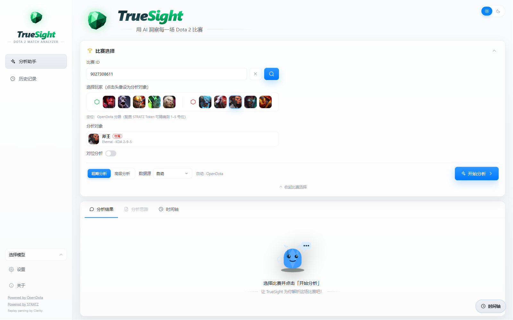
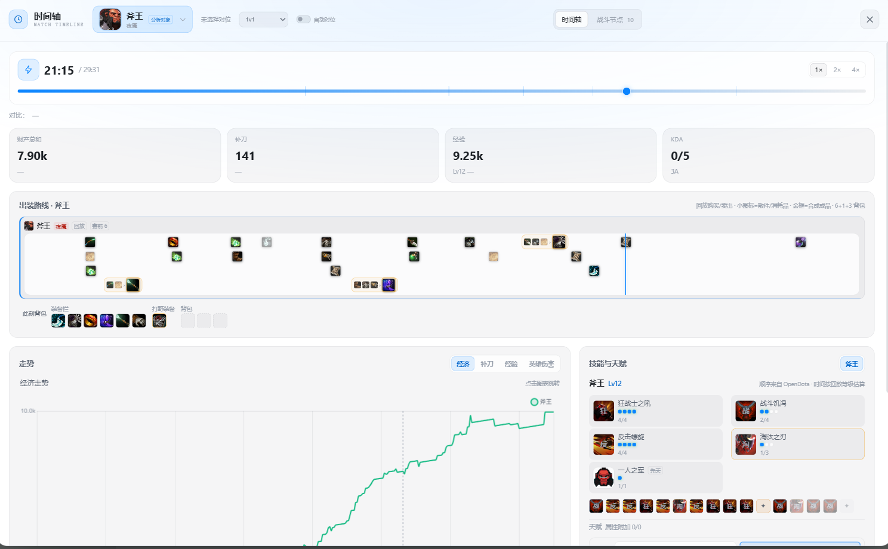
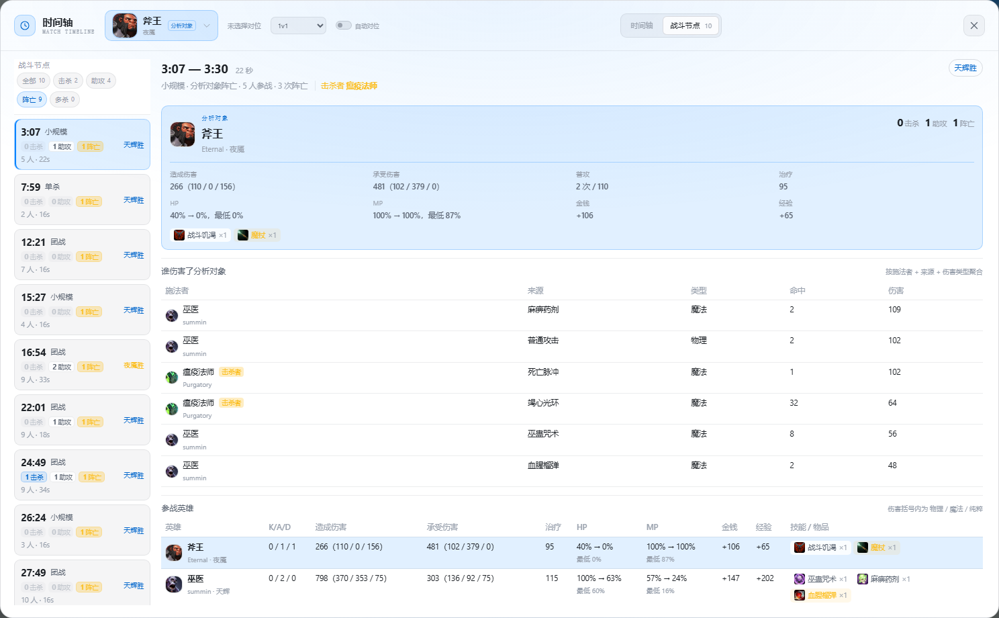
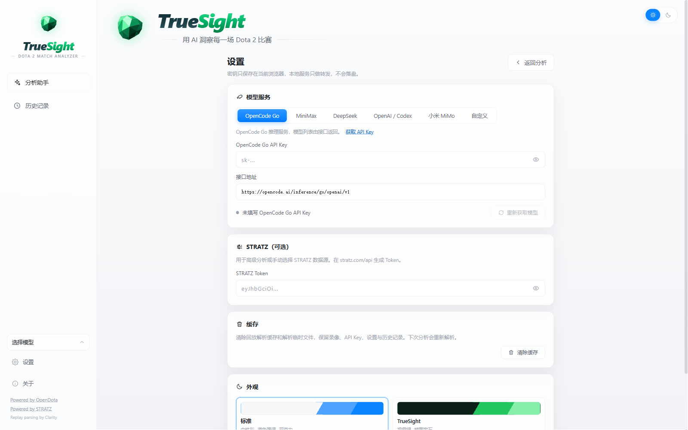

Key 不上云
AI Key 与 STRATZ Token 保存在本机 localStorage，由本地服务转发请求。
TRUESIGHT · DOTA 2 MATCH ANALYZER
Clarity 本地回放解析、逐分钟时间轴、以你为中心的战斗节点，以及真正引用录像事实的 AI 复盘。 所有数据留在你的电脑。

标准主题 · 随站点深浅自动切换
OVERVIEW
从对线期的每一个补刀，到最后一波团战的每一次承伤。TrueSight 把录像和公开数据整理成一张可以追溯的证据链， 让复盘不再靠印象。
经济 / 经验 / 补刀采样
战斗 HP / MP / 金钱采样
战斗日志事件精度
数据上传到云端
MATCH TIMELINE
时间轴不是一张静态图表。拖动它，经济、经验、补刀、背包、技能加点和场上位置会同步回到那一刻。

COMBAT NODES
以你为圆心，自动切分单杀、小规模遭遇、团队团战和多杀。谁先手、谁补伤害、谁承受了最多技能，都在一条 0.1 秒精度的时间线上。

AI COACH
AI 拿到的是这一场真实的录像数据：击杀时间线、出装、技能释放与伤害。先有事实，再谈判断。

PRIVACY
AI Key 与 STRATZ Token 保存在本机 localStorage，由本地服务转发请求。
回放下载、Clarity 解析与缓存都在这台电脑完成，不经过任何服务器。
没有账号系统、没有统计上报；删除缓存即可清理本地分析数据。
DOWNLOAD
选择安装版或便携版。Python、Java 21 与 Clarity 已内置，无需单独配置环境，安装后即可分析。
固定安装到当前用户，创建桌面与开始菜单快捷方式。
单个自解压 exe，不写安装目录；首次运行会解压到临时目录，并把后端准备到用户数据目录。
当前构建未配置代码签名，Windows SmartScreen 可能提示“未知发布者”。选择“更多信息 → 仍要运行”即可。 需要 Windows 10 1809 或更高版本。
FAQ
长期使用选安装版，会创建快捷方式；不想写安装目录、需要放到移动硬盘或多台电脑使用，选便携版。
不是压缩包，是一个自解压 exe：双击后自动解压到临时目录并启动，首次运行还会把后端准备到用户数据目录。它比安装版小，是因为不含安装向导、卸载器和安装/升级组件，不是少了运行文件。
不需要。桌面客户端已经内置 Python、Java 21 与 Clarity，安装后直接启动即可。
高级分析需要下载回放并用 Clarity 本地解析，通常需要几分钟；同一场录像解析完成后会缓存，再次打开会很快。
Key 保存在浏览器 localStorage（truesight.config.v1），比赛数据与解析缓存保存在本机数据目录。设置页可清理缓存，不会删除 Key。
重新下载最新安装包覆盖安装即可；便携版直接替换 exe。设置与历史记录保存在用户数据目录，不会被覆盖。
目前只提供 Windows 10 / 11 x64 客户端。源码可通过 Node 与 Python 手动运行，但未提供其他平台的安装包。
Dota 2 以及英雄头像、技能图标、装备图标等美术资源版权归 Valve Corporation 所有。TrueSight 仅用于本机对局分析展示，与 Valve 没有隶属或合作关系。